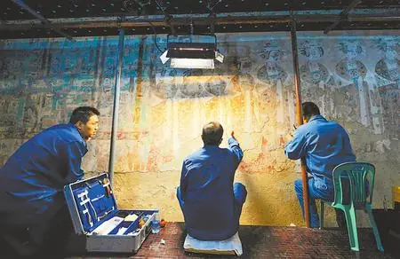
敦煌莫高窟
崖壁洞窟保存了跨越千年的佛教造像与壁画，是丝绸之路上宗教、商旅与艺术交流的核心见证。
赭石 · 石绿 · 描金
从莫高窟壁画到嘉峪关城楼，从鸣沙山月牙泉到张掖丹霞，页面以中国传统矿物颜料构成视觉基调，结合飞天飘带、丝绸之路与影棚柔光的产品摄影质感，呈现甘肃文化的厚重与明亮。
图片内容围绕甘肃的自然地貌、边塞建筑和敦煌遗产展开，文字描述与图像一一对应，方便手机端浏览时快速理解每个地点的文化意义。

崖壁洞窟保存了跨越千年的佛教造像与壁画，是丝绸之路上宗教、商旅与艺术交流的核心见证。
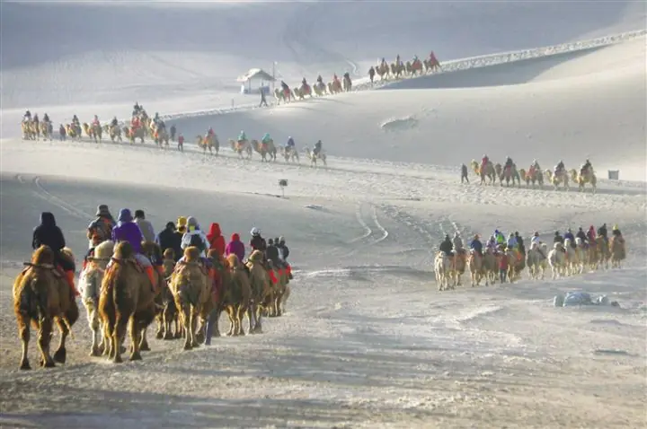
沙丘与泉水相依，形成敦煌最具辨识度的自然景观，也呼应古代驼队穿越河西走廊的旅程。
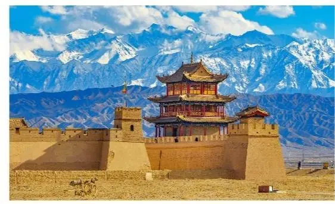
雄关连接长城防线与河西通道，城楼、瓮城和关墙体现了边塞建筑的秩序感与防御智慧。
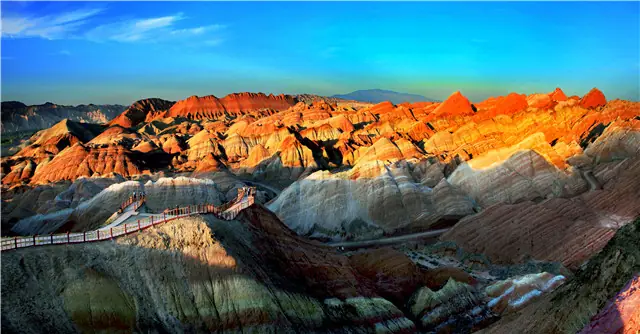
层理分明的红色丘陵像被矿物颜料铺陈的山体，和页面中的赭石、石绿、描金配色形成视觉呼应。
铜奔马又常被称为“马踏飞燕”，出土于甘肃武威雷台汉墓。它以一足踏飞鸟、三足腾空的姿态，把速度、平衡和汉代青铜铸造能力凝结在一个瞬间。
马身前倾、颈部昂起，重心落在飞鸟之上，形成轻盈而有张力的动态结构。
青铜材质在柔光下呈现深沉金属光泽，与页面中的描金线条形成呼应。
武威位于河西走廊东段，铜奔马把甘肃的交通史、军事史和丝路文明连接起来。
首页 3D 动画围绕铜奔马旋转展示，让文物成为整个页面的核心视觉锚点。
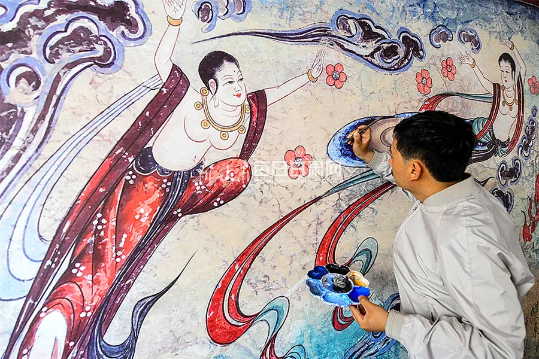
敦煌飞天的飘带是页面 3D 动画的主要灵感，色彩采用矿物颜料的稳定质感：赭石用于大地与崖壁，石绿用于绿洲与装饰线，描金用于光泽和仪式感。
页面中的金色细线、柔和高光与旋转展牌模拟影棚里的产品摄影布光，让历史文化内容以更现代、清洁的方式呈现。
在手机端浏览时，复杂的 3D 展示会自动收束为单张主视觉，保证文字和图片不重叠，重点内容仍然清晰。
甘肃的文化面貌来自交通、信仰与地貌的长期叠合。这里用三个段落梳理网页中的主要叙事线索。
山地、戈壁、绿洲和关隘连成东西通道，使甘肃成为古代丝路上难以绕开的文化走廊。
飞天、供养人、藻井和经变画吸收多元审美，形成线条舒展、色彩沉稳、叙事密集的壁画传统。
嘉峪关等建筑体现军事防御、贸易管理和礼制空间的结合，也让“关城”成为甘肃历史记忆的标志。
甘肃的建筑不是单一风格，而是在汉唐丝路、明代边防、佛教石窟、藏传佛教和黄河城市生活中逐渐叠合而成。它们共同构成了从戈壁关城到寺院街巷的空间记忆。
嘉峪关以城楼、瓮城、关墙和长城体系组织边防空间，体现河西走廊作为交通咽喉的军事尺度。
莫高窟把崖壁、洞窟、塑像和壁画组合成完整礼拜空间，外部朴素，内部以色彩和叙事展开。
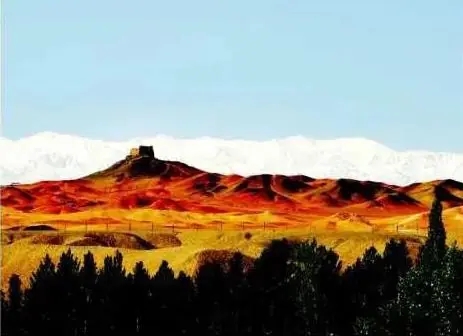
阳关烽燧以夯土遗迹立于戈壁绿洲之间，见证汉唐时期通关、候望与丝路交通的历史。
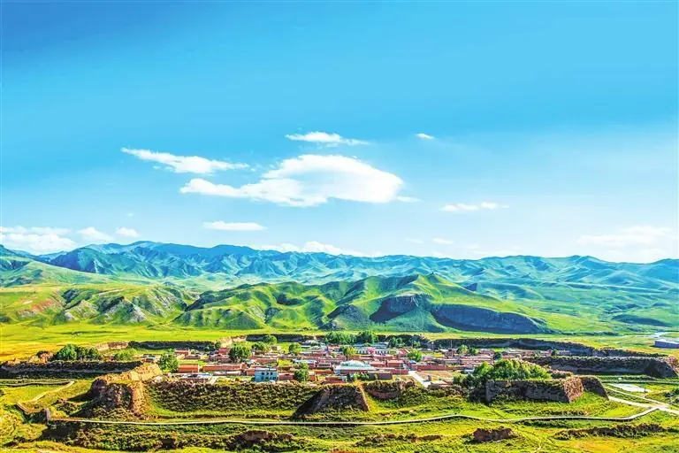
夏河八角城以独特的城郭形制保存丝路古城记忆，城墙与高原地貌共同形成鲜明的边地景观。
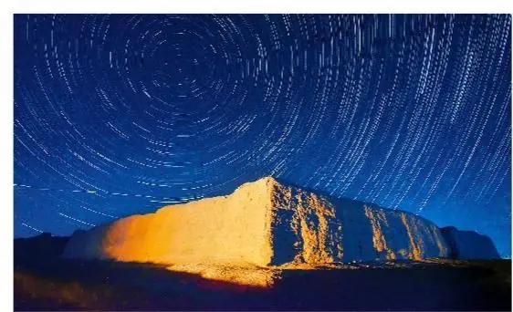
十营庄堡等边塞聚落延续了防护、居住与交通节点的复合功能，是河西走廊城防体系之外的生活空间。
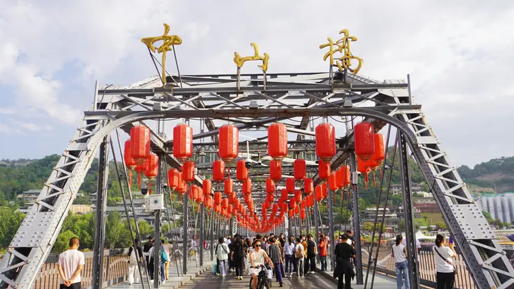
兰州黄河铁桥等近现代建筑把交通、城市记忆和黄河景观连接起来，是甘肃城市文化的重要节点。
甘肃民俗有很强的地域层次：河西有边塞与丝路记忆，陇东有社火与农耕节俗，甘南有草原歌舞和宗教生活，敦煌则把舞乐、壁画和现代舞台表达连接起来。
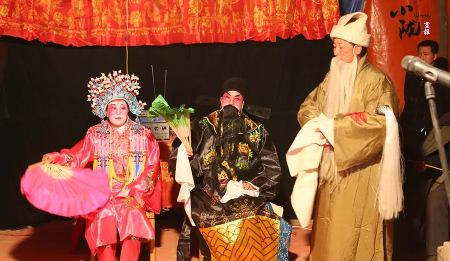
春节前后，社火表演把鼓乐、秧歌、角色扮演和村社巡游结合起来，是甘肃乡土年俗中最热烈的公共场景。
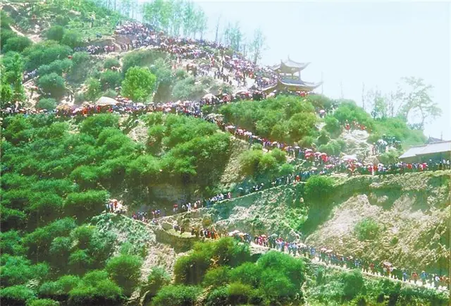
“花儿”以高亢旋律和即兴唱词表达山川、爱情与劳动生活，在西北多民族文化交流中形成鲜明辨识度。
敦煌舞从壁画人物姿态中提炼手势、身韵与飘带动作，让静态壁画转化为可观看的舞台艺术。
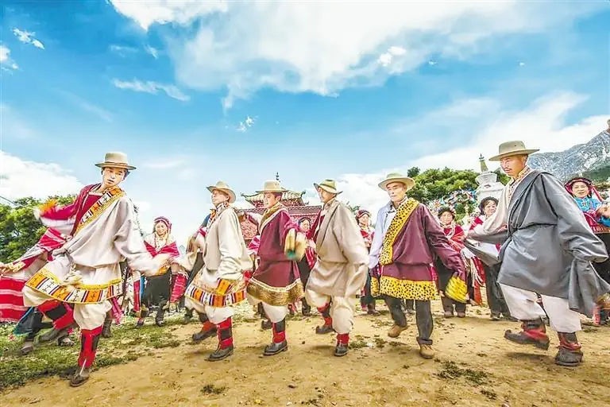
甘南地区的锅庄舞强调群体围舞、节奏步伐和社群参与，展现高原生活中的礼仪与欢庆。
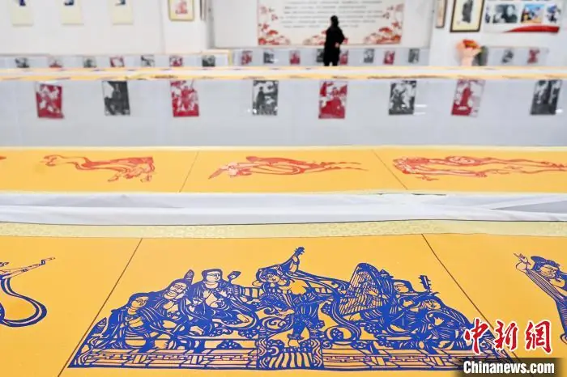
洮砚、剪纸、刺绣、皮影、木雕等手作承载地方材料和审美经验，是日常生活中的文化纹理。
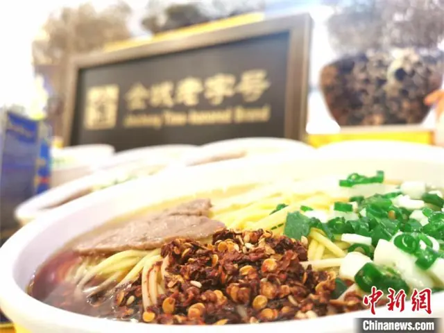
牛肉面、浆水面、手抓羊肉、酿皮等饮食连接了城市街巷、商旅驿路和家庭待客的生活方式。
这些视频链接来自央视网，覆盖铜奔马、莫高窟、嘉峪关、河西走廊、甘肃非遗和民歌花儿。点击卡片会在新页面打开，可直接观看更直观的影像内容。
节目走进甘肃，聚焦锅庄舞、崆峒派武术、万人扯绳赛、敦煌舞蹈等二十余项非遗。
打开观看从河西走廊西端进入敦煌，了解莫高窟作为世界文化遗产的保护与传承。
打开观看讲述嘉峪关作为丝绸之路与长城交汇点的历史位置，以及边防建筑的战略意义。
打开观看以空中视角观看祁连山、嘉峪关、河西走廊等地貌与建筑，增强空间尺度感。
打开观看通过春节社火场景感受甘肃乡村年俗、鼓乐巡游和社区共同参与的热闹氛围。
打开观看用音乐直观感受甘肃“花儿”的旋律气质和西北民歌的开阔表达。
打开观看